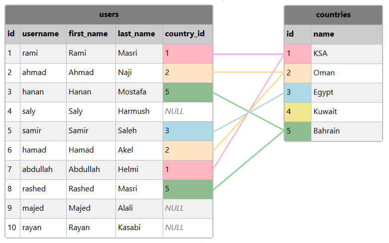

SQLوضع أسماء مختصرة للجداول
الكلمة AS مع الجداول
في الدروس السابقة شاهدنا أنه بإمكاننا تغيير أسماء الجداول عند جلبها بواسطة الكلمة AS.
في هذا الدرس ستتعلم طريقة وضع أسماء مختصرة للجداول حين نجلب المعلومات من أكثر من جدول في نفس الوقت حتى لا تضطر إلى كتابة إسم الجدول كما هو كلما أردنا الإشارة إلى جدول موجود فيه.
الشكل العام لإستخدامها مع الجداول
SELECT alias_name.column1, alias_name.column2, ...
FROM table_name AS alias_name;
إذاً لوضع إسم مختصر للجدول, نضع AS بعد إسم الجدول و من ثم ندخل الإسم المختصر له.
بعد وضع إسم مختصر للجدول, تستخدم هذا الإسم نفسه للوصول لأعمدته.
تجهيز قاعدة البيانات التي سنطبق عليها
قم بتنفيذ الإستعلام التالي حتى تنشئ قاعدة بيانات جديدة إسمها harmash تحتوي على الجداول التالية:
الإستعلام
-- سيتم حذفها harmash في حال كان يوجد بالأساس قاعدة بيانات إسمها
DROP DATABASE IF EXISTS harmash;
-- harmash هنا قمنا بإنشاء قاعدة بيانات جديدة إسمها
CREATE DATABASE harmash;
-- harmash هنا قمنا بتحديد أن أي إستعلام جديد سيتم تنفيذه على قاعدة البيانات
USE harmash;
-- يتألف من عامودين countries هنا قمنا بإنشاء جدول جديد إسمه
-- لأننا قمنا بتحديدها قبل إستدعاء هذا الأمر harmash سيتم إنشاء هذا الجدول بداخل قاعدة البيانات
CREATE TABLE countries (
id INT NOT NULL PRIMARY KEY AUTO_INCREMENT,
name VARCHAR(100),
UNIQUE (name)
);
-- هنا قمنا بإضافة 5 أسطر في الجدول, أي أضفنا معلومات 5 بلدان
-- لاحظ أننا لم نحدد أسماء الأعمدة التي سنضع فيها البيانات لأننا قمنا بملئ جميع المعلومات
-- في البداية هو حتى يكون عدد القيم الموضوعة يساوي عدد أعمدة الجدول null سبب وضع الكلمة
-- ستقوم قاعدة البيانات بوضع رقم تعرفة مختلف لكل سطر null مكان الكلمة
INSERT INTO countries VALUES (null, "KSA");
INSERT INTO countries VALUES (null, "Oman");
INSERT INTO countries VALUES (null, "Egypt");
INSERT INTO countries VALUES (null, "Kuwait");
INSERT INTO countries VALUES (null, "Bahrain");
-- يتألف من 5 أعمدة users هنا قمنا بإنشاء جدول جديد إسمه
-- لأننا قمنا بتحديدها قبل إستدعاء هذا الأمر harmash سيتم إنشاء هذا الجدول بداخل قاعدة البيانات
CREATE TABLE users (
id INT NOT NULL PRIMARY KEY AUTO_INCREMENT,
username VARCHAR(30),
first_name VARCHAR(50),
last_name VARCHAR(50),
country_id INT,
UNIQUE (username)
);
-- هنا قمنا بإضافة 10 أسطر في الجدول, أي أضفنا معلومات 10 مستخدمين
-- لاحظ أننا لم نحدد أسماء الأعمدة التي سنضع فيها البيانات لأننا قمنا بملئ جميع المعلومات
-- في البداية هو حتى يكون عدد القيم الموضوعة يساوي عدد أعمدة الجدول null سبب وضع الكلمة
-- ستقوم قاعدة البيانات بوضع رقم تعرفة مختلف لكل سطر null مكان الكلمة
INSERT INTO users VALUES (null, "rami", "Rami", "Masri", 1);
INSERT INTO users VALUES (null, "ahmad", "Ahmad", "Naji", 2);
INSERT INTO users VALUES (null, "hanan", "Hanan", "Mostafa", 5);
INSERT INTO users VALUES (null, "saly", "Saly", "Harmush", null);
INSERT INTO users VALUES (null, "samir", "Samir", "Saleh", 3);
INSERT INTO users VALUES (null, "hamad", "Hamad", "Akel", 2);
INSERT INTO users VALUES (null, "abdullah", "Abdullah", "Helmi", 1);
INSERT INTO users VALUES (null, "rashed", "Rashed", "Masri", 5);
INSERT INTO users VALUES (null, "majed", "Majed", "Alali", null);
INSERT INTO users VALUES (null, "rayan", "Rayan", "Kasabi", null);
بعد تنفيذ الإستعلام السابق في phpMyAdmin سيتم إنشاء قاعدة البيانات harmash و إنشاء الجدولين countries و users بداخلها.
قم بالنقر على إسم قاعدة البيانات harmash من القائمة اليسرى حتى تبدأ بالتعامل معها و تطبيق ما ستتعلمه في هذا الدرس.
الجدول التالي يظهر البيانات التي قمنا بإضافتها بشكل إفتراضي في الجدول countries.
| countries |
| id | name |
| 1 | KSA |
| 2 | Oman |
| 3 | Egypt |
| 4 | Kuwait |
| 5 | Bahrain |
الجدول التالي يظهر البيانات التي قمنا بإضافتها بشكل إفتراضي في الجدول users.
| users |
| id | username | first_name | last_name | country_id |
| 1 | rami | Rami | Masri | 1 |
| 2 | ahmad | Ahmad | Naji | 2 |
| 3 | hanan | Hanan | Mostafa | 5 |
| 4 | saly | Saly | Harmush | NULL |
| 5 | samir | Samir | Saleh | 3 |
| 6 | hamad | Hamad | Akel | 2 |
| 7 | abdullah | Abdullah | Helmi | 1 |
| 8 | rashed | Rashed | Masri | 5 |
| 9 | majed | Majed | Alali | NULL |
| 10 | rayan | Rayan | Kasabi | NULL |
الآن, إذا وضعنا الجدولين بجانب بعض, سنلاحظ كيف ربطنا قيم الجدول users بقيم الجدول countries من خلال رقم التعرفة id الخاص بكل بلد.

ملاحظات حول الجدول users:
عند تحديد بلدان المستخدمين لم نقم بكتابة أسماء البلدان من جديد, بل وضعنا فقط رقم id البلد المذكور في الجدول countries.
يوجد 3 مستخدمين لم يتم تحديد بلدهم, أي عندهم قيمة الحقل country_id تساوي NULL.
لا يوجد أي مستخدم من البلد الذي يملك رقم id يساوي 4, أي لا يوجد أي مستخدم من Kuwait.
متى نحتاج وضع أسماء مختصرة؟
الحالة الأولى
إذا كنت تتعامل مع جدول واحد, فأنت لست بحاجة إطلاقاً لذكر إسم الجدول الذي تتعامل مع أعمدته.
عند التعامل مع جدول واحد فقط, لا تحتاج أن تضع إسم مختصر للجدول لأنه من ناحية لا يوجد داعي لذلك, و من ناحية أخرى سيؤدي لزيادة حجم الكود.
فمثلاً, إذا كنا نريد طباعة first_name و last_name المستخدمين الموضوعين في الجدول users.
لاحظ كيف سكون شكل الإستعلام, إذا قمنا بذكر إسم الجدول الذي يحتوي على الأعمدة أو إذا وضعنا إسم مختصر للجدول.
الإستعلام
شكل الإستعلام بدون وضع أسماء مختصرة للجداول.
SELECT first_name, last_name
FROM users;
شكل الإستعلام مع ذكر إسم الجدول الذي نتعامل مع أعمدته.
SELECT users.first_name, users.last_name
FROM users;
شكل الإستعلام إذا وضعنا إسم مختصر للجدول users مثل الحرف u فقط.
SELECT u.first_name, u.last_name
FROM users AS u;
سنحصل على النتيجة التالية عند تنفيذ الإستعلام.
| first_name | last_name |
| Rami | Masri |
| Ahmad | Naji |
| Hanan | Mostafa |
| Saly | Harmush |
| Samir | Saleh |
| Hamad | Akel |
| Abdullah | Helmi |
| Rashed | Masri |
| Majed | Alali |
| Rayan | Kasabi |
الحالة الثانية
إذا كنت تتعامل مع جدولين أو أكثر, يفضل وضع أسماء مختصرة للجداول لأن ذلك سؤدي لتقليل حجم الكود.
بالإضافة إلى أنك بذلك ستتجنب حدوث تضارب في أسماء الجداول كما سبق و شاهدنا في الدرس السابق.
الآن, في حال أردنا طباعة id و username و country كل مستخدم موجود في الجدول users سواء كان يملك رقم بلد محدد أم لا يمكننا أن نربط الجدولين بطريقة LEFT JOIN تماماَ كما فعلنا في الدرس السابق.
هنا ستلاحظ أن حجم الكود سيصبح أقل إذا وضعنا أسماء مختصرة للجداول.
و لك أن تتخيل كم سيصبح حجم الكود أصغر إذا كنا سنحضر المعلومات من أعمدة أخرى و كنا ننوي نضع شروط.
الإستعلام
شكل الإستعلام مع ذكر إسم الجدول الذي نتعامل مع أعمدته.
SELECT users.id, users.username, countries.name AS country
FROM users LEFT JOIN countries
ON users.country_id = countries.id;
شكل الإستعلام إذا وضعنا الحرف u كإسم مختصر للجدول users و الحرف c كإسم مختصر للجدول countries.
SELECT u.id, u.username, c.name AS country
FROM users AS u LEFT JOIN countries AS c
ON u.country_id = c.id;
سنحصل على النتيجة التالية عند تنفيذ الإستعلام.
| id | username | country |
| 1 | rami | KSA |
| 2 | ahmad | Oman |
| 3 | hanan | Bahrain |
| 4 | saly | NULL |
| 5 | samir | Egypt |
| 6 | hamad | Oman |
| 7 | abdullah | KSA |
| 8 | rashed | Bahrain |
| 9 | majed | NULL |
| 10 | rayan | NULL |
الحالة الثالثة
إذا كان الجدول نفسه يحتوي على أعمدة قيمها مترابطة ببعضها البعض, في هذه الحالة تكون مجبر على وضع إسم مختصر للجدول حتى تتمكن من جلب البيانات بشكل مترابط.
ربط بيانات الجدول نفسه ببعضها ( Self Join ) لم نتطرق له سابقاً لأنك يجب أن تعرف كيف تضع إسم مختصر للجدول حتى تتمكن من فعل ذلك.
في الدرس التالي ستتعلم كيف يتم ربط بيانات الجدول نفسه ببعضها بتفصيل ممل.


 محرر الويب
محرر الويب نظام الألوان
نظام الألوان محول الوحدات
محول الوحدات محلل عناوين الشبكات
محلل عناوين الشبكات